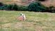
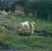
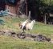

|
(Click on Photo to enlarge)
I had no idea until recently, how well llamas and goats get
along. Our neighbor has added a mother and baby goat to the pasture and the
little one is really taken with our llamas. The patience of the llamas is
always amazing especially when you see them with the young goat on their back.
It's so funny to see a little goat climbing all over the llamas when they are
kushed. My favorite pose is when the little goat gets on Charlie's back, when
Charlie is standing up.
(Click on Photo to enlarge)
And as luck would have it, I just happened
to get a picture while working on this page. In this photo you will see the
little goat has jumped on Drake's back and just standing there like he is king
of the mountain.
(Click on Photo to enlarge)
This is just a playful picture of Charlie
and the baby goat. The little goat first learned how to get on Charlie's back
and now shares that with Drake. These are the only 2 llamas he plays with,
wonder if the similar colors of Charlie & Drake has anything to do with his
preference?
  |